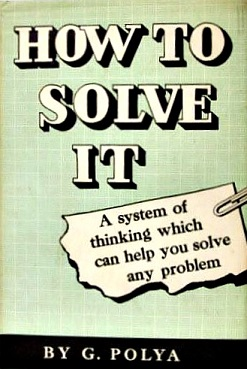

Why a 1945 Math Book Is the Ultimate Antidote to AI Hallucination
Eight decades ago, Stanford mathematician George Pólya codified the universal psychology of problem-solving. Today, his four-stage heuristic framework provides the exact cognitive scaffolding needed to cure the autoregressive myopia of Large Language Models.

Original landmark edition: HowToSolveIt.jpg
Princeton University Press (1945 Edition)
Historical Foundation • Stanford, 1945
George Pólya & How to Solve It
Princeton University Press (1945)> 1,000,000 Copies Sold17+ Language TranslationsStanford Department of Mathematics
George Pólya (1887–1985) was a Hungarian-American mathematician who held professorships at ETH Zürich and Stanford University. Renowned for fundamental contributions across probability theory, complex analysis, combinatorics, and geometry, Pólya made his most enduring impact on human thought in 1945 when he published a compact, 250-page volume entitled How to Solve It: A New Aspect of Mathematical Method.
While conventional mathematical education focused strictly on formal deductive proofs (showing that a theorem is true after the fact), Pólya investigated the messy, inductive, and psychological process of discovery itself: how mathematicians stumble upon an idea, how they navigate uncertainty, and how they decompose overwhelming problems into solvable components.
Drawing upon the intellectual heritage of René Descartes (Rules for the Direction of the Mind, 1628), Gottfried Wilhelm Leibniz (Ars Inveniendi, 1666), and Leonhard Euler, Pólya revived the forgotten discipline of Heuristic: the study of methods and rules of invention.
"It is foolish to answer a question that you do not understand. It is sad to work for an end that you do not desire."
— George Pólya, How to Solve It (Princeton University Press, 1945)
INTELLECTUAL LINEAGE • CROSS-DISCIPLINARY IMPACT
The Foundation of Heuristic AI & Modern Computing
Pólya's 1945 work did not remain confined to mathematics. It ignited the foundational paradigms of symbolic artificial intelligence, cognitive science, and structured software engineering.
1961 • MIT AI LABSymbolic AI
Marvin Minsky
Steps Toward Artificial Intelligence (Proc. IRE)
"Everyone should know the work of George Pólya on how to solve problems."
In his seminal paper establishing artificial intelligence as a scientific field, Minsky cited Pólya's heuristics as the core conceptual model for machine problem-solving, search pruning, and knowledge representation.
1982 • COMPUTER SCIENCEAlgorithm Design
R. Geoff Dromey
How to Solve It by Computer (Prentice-Hall)
"Pólya's method provides the blueprint for translating human insight into computational algorithms."
Directly mapped Pólya's four-stage heuristic framework into modern computer programming, loop invariants, top-down step-wise refinement, and provably correct software engineering.
1985 • UC BERKELEYCognitive Metacognition
Alan H. Schoenfeld
Mathematical Problem Solving (Academic Press)
"Heuristic strategies alone fail without rigorous managerial, metacognitive control."
Demarcated problem-solving research into "before and after Pólya," proving that heuristics require a supervisory control mechanism that halts unviable paths—the exact foundation of Pólya SDLC's Mandatory Pause Rule.
THE 100-PAGE ENCYCLOPEDIA
The "Short Dictionary of Heuristic"
The defining centerpiece of How to Solve It is Pólya's 100-page glossary detailing the psychological moves and formal rules of discovery. Pólya SDLC directly operationalizes these century-old algorithmic primitives into agent prompt scaffolds:
Working Backwards(Target Seam)Decomposing & Recombining(Modular Slices)Auxiliary Problems(Spikes)Analogy & Isomorphism(Patterns)Induction & Specialization(TDD & Edge Cases)Reductio ad Absurdum(Floor-Guard)Inventor's Paradox(Generalization)Condition / Data / Unknown(Problem Triad)
THE PROBLEM SPACE
The Cognitive Pathology of LLM Coding Agents
Modern Large Language Models (LLMs) possess vast syntactic fluency, yet they routinely produce catastrophic bugs, hallucinated dependencies, and architectural chaos. Why?
polya-books-cats.jpg • George Pólya with his cats at Stanford
The Psychology of Problem-Solving
"The first rule of discovery is to have brains and good luck. The second rule is to sit tight and wait until you get an idea."
George Pólya observed that profound problem-solvers do not rush immediately to final answers. They step back, observe quietly, deconstruct relations, and play with auxiliary models. In contrast, modern AI models suffer from an autoregressive compulsion to emit code tokens immediately—jumping straight into execution without ever establishing mathematical invariants.
01 / AUTOREGRESSIVE MYOPIAAI Failure Mode
Token-by-Token Greediness
LLMs operate on next-token prediction: \(P(w_{t} \mid w_{1}, \dots, w_{t-1})\). Without explicit external scaffolding, the model is compelled to start emitting code characters immediately. It commits to syntactic structures and variable names before computing the dependency graph or transaction boundaries.
Pólya Heuristic Cure
The Mandatory Pause Rule & Stage 1 Decomposition: The agent is forbidden from emitting functional code tokens until it has formally segregated the Unknown, the Data, and the Condition.
02 / PREMATURE CODINGAI Failure Mode
The Hallucination of Immediate Competence
When asked to "build feature X", an AI agent instinctively begins writing code in the presentation or database layer. Because it has not verified existing imports or schema types, it hallucinates convenient library methods, invents phantom database columns, and breaks existing caller contracts.
Pólya Heuristic Cure
Seam Mapping & Type-Driven Contracts: Phase 1 (/to-spec) requires mapping DTO boundaries, Value Objects, and abstract ports before any concrete implementation is drafted.
03 / BLIND ALLEY SUNK COSTAI Failure Mode
The Nested Hack Death Spiral
When an AI agent's initial code fails a test or compiler check, its default reflex is to patch the error with nested try/catch blocks, arbitrary type assertions (as any), or conditional band-aids, burying the foundational mistake beneath layers of cognitive debt.
Pólya Heuristic Cure
Respice Finem & Trajectory Monitoring (Pólya p. 178): Recognizing warning signs of a blind alley. When a patch causes secondary breaks, the agent turns back to first principles (/to-fix) using bisection rather than stacking hacks.
04 / ARCHITECTURAL EXTREMISMAI Failure Mode
The Pedantry vs. Spaghetti Polarity
Unconstrained AI models oscillate violently between two extremes: either generating 400 lines of unmaintainable monolithic spaghetti, or building ridiculous over-engineered enterprise abstractions with 8 nested interface layers for a simple 5-line string transform.
Pólya Heuristic Cure
Pedantry vs. Mastery (Pólya p. 148): Enforcing Uncle Bob's Clean Architecture where business invariants reside, while providing surgical fast-track modes (/to-quick-fix) for routine maintenance.
ARCHITECTURAL TRANSLATION
The Four Stages of Mathematical Problem-Solving
Pólya formulated four universal steps on the inside cover of How to Solve It. Here is how each mathematical stage maps directly to the modern software engineering lifecycle.
Stage 1 • Understanding
1. Understanding the Problem
"What is the unknown? What are the data? What is the condition? Is it possible to satisfy the condition?"
The Problem Triad: Isolate the exact output (The Unknown), the incoming payloads and database states (The Data), and business invariants/SLAs (The Condition).
Introduce Suitable Notation: Model schemas using Type-Driven Design, DTO contracts, and Discriminated Unions before implementation.
"Find the connection between the data and the unknown. Consider auxiliary problems if an immediate connection cannot be found."
Auxiliary Problems: If the full feature is too complex, solve a simplified sub-problem first (e.g. pure synchronous state machine before distributed cache).
The Inventor's Paradox: Sometimes the more general architectural abstraction is easier to implement cleanly than a specialized one-off patch.
Vertical Tracer Bullets: Plan end-to-end thin slices connecting DB to UI that are demoable, rather than horizontal layer-by-layer work.
How Pólya's specific 1945 mathematical techniques are hard-coded into agent system prompts, linters, and verification gates.
Pólya (1945, p. 71–72) • Structural Axiom
The Problem Triad
Condition(Data) ➔ Unknown
Every genuine mathematical problem consists of three irreducible elements. Conflating them is the root cause of AI hallucination, broken invariants, and phantom database columns.
Software Seam: Domain business invariants, authentication permissions, ACID transactional bounds, and SLA constraints.
03 / THE UNKNOWN
What is sought?
The target entity, value, or proof to be constructed.
Software Seam: The verified return type, UI component state, or external API wire serialization contract.
Phase 2 ➔ Phase 3 Barrier
The Mandatory Pause Rule
Unconstrained LLMs suffer from autoregressive token greed—instantly dumping hundreds of lines of speculative code. In Pólya SDLC, completing Phase 2 (/to-plan) triggers a programmatic halt. The agent cannot emit production code until a human engineer validates tracer bullets.
"Never mistake immediate token generation for thoughtful architecture. The Pause Rule protects the blast radius."
Pólya (1945, p. 121)
The Inventor's Paradox
When developers patch a single bespoke edge-case, they introduce messy nested conditionals. Stepping back to solve a slightly more general problem—such as formalizing a finite state machine, a discriminated union, or a Port—eliminates edge-case bugs by construction.
"The more ambitious plan may have more chances of success, because it is based on deeper structural relations."
Pólya (1945, p. 148, 171)
Pedantry vs. Mastery
We balance Uncle Bob's architectural purity with George Pólya's pragmatism. Mission-critical business workflows demand 4-layer Clean Architecture boundaries. But auxiliary scripts, seeders, or routine mechanical fixes must bypass ceremony via /to-quick-fix.
"To apply a rule rigidly is pedantry; to apply it with judgment, noticing where it fits, is mastery. Always use your own brains first."
EMPIRICAL COMPARISON
Raw LLM Prompting vs. Pólya SDLC Coder
A side-by-side breakdown of agent behavior across every phase of the development lifecycle.
Dimension
Raw Unconstrained LLM Prompting
Pólya Heuristic Coder Agent
First Response
Immediately streams hundreds of lines of code into chat.
Deconstructs problem into Unknown, Data, Condition; runs codebase reconnaissance.
Requirement Ambiguity
Silently guesses assumptions, often choosing the wrong framework or database idiom.
Invokes /to-clarify with Socratic A/B choices and numbered tags ([ASSUMPTION-001]).
Planning Structure
Vague, optimistic narrative without failure modes or vertical slices.
Rigorous Vertical Tracer Bullets with Contingency Plan B and anti-hallucination gates.
Execution Control
Rushes into editing 15 files at once; breaks build midway.
Halts at The Pause Rule; executes one tracer bullet at a time via Micro-TDD.
Encountering Bugs
Adds nested try/catch, suppresses linter, or writes // TODO stubs.
First-principles bisection search; failing reproduction test before code edit.
Task Completion
Says "done!" with zero regression testing or architectural reflection.